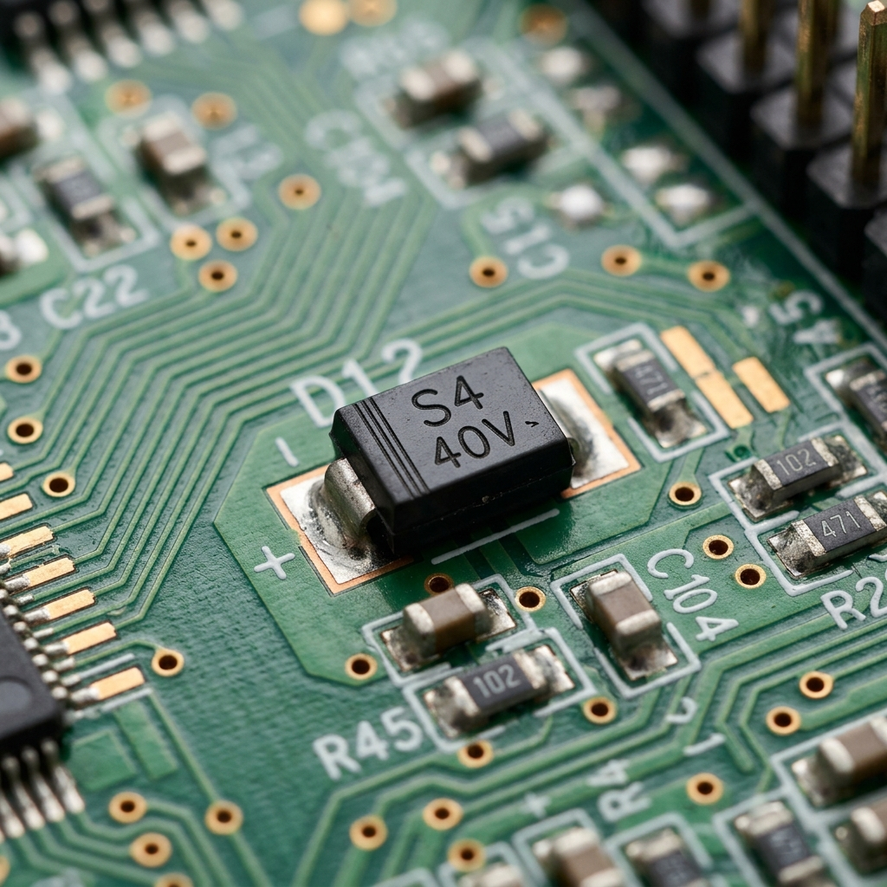
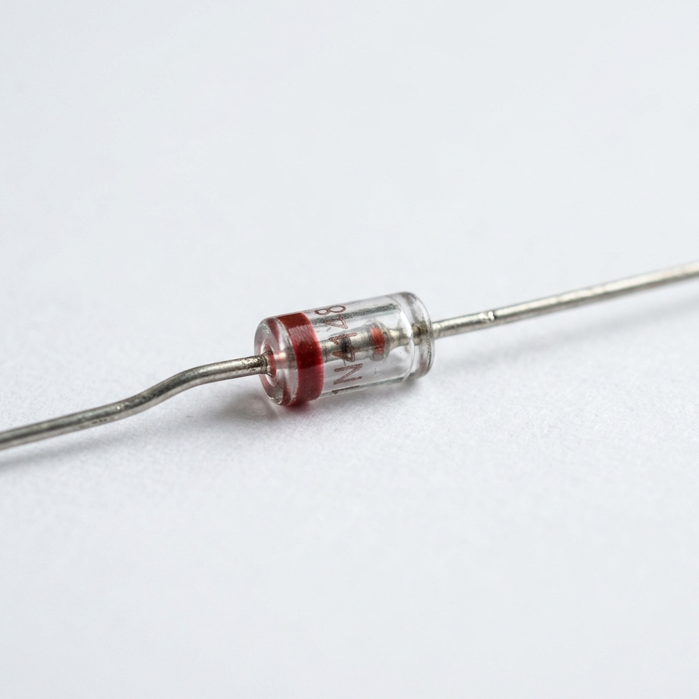

Dioda adalah komponen elektronika aktif dengan dua elektroda (anoda dan katoda) yang berfungsi menyearahkan arus listrik—mengalirkan arus ke satu arah dan menghambat arah sebaliknya. Ditemukan akhir abad ke-19 (Braun 1874) dan dikembangkan awal abad ke-20 (Fleming 1904), dioda modern umumnya berbasis semikonduktor (silikon/germanium).


Contoh nyata komponen dioda jenis SMD (Surface Mount Device) pada PCB (Motherboard). (Perhatikan garis/tanda pada salah satu sisi komponen yang menunjukkan letak Katoda).
Visualisasi interaktif aliran tegangan, forward voltage test, dan cara mengukur polaritas dioda dengan multimeter.
Forward Voltage (Vf) adalah tegangan minimum yang harus diberikan ke dioda agar arus bisa mengalir. Di bawah Vf, dioda tidak konduksi. Di atas Vf, dioda konduksi dan "menjaga" tegangan di kaki-kakinya tetap ≈ Vf.
| Tipe Dioda | Vf Tipikal | Keterangan | Diode Test (baik) |
|---|---|---|---|
| Silicon (1N4007) | 0.6 – 0.7 V | Paling umum, rectifier | 0.5–0.8 V |
| Germanium (1N60) | 0.2 – 0.3 V | Lawas, sinyal kecil | 0.15–0.35 V |
| LED Merah | 1.8 – 2.2 V | Menyala saat forward | 1.6–2.4 V |
| LED Biru / Putih | 3.0 – 3.5 V | Tegangan lebih tinggi | 2.8–3.6 V |
| Schottky (1N5819) | 0.2 – 0.45 V | Sangat cepat, Vf rendah | 0.15–0.5 V |
Putar selector ke simbol ▷| (dioda/buzzer). Bukan ke Voltmeter DC biasa.
Probe MERAH (+) ke ANODA dioda. Probe HITAM (−) ke KATODA (sisi bergaris putih).
Nilai normal silicon: 0.5 – 0.8 V. Jika display menunjukkan OL atau
1. → dioda putus.
Tukar probe: merah ke katoda, hitam ke anoda. Dioda baik → harusnya tampil OL (tidak
konduksi). Jika ada nilai kecil → dioda bocor.
Dioda tanpa marking yang jelas? Gunakan metode ini untuk menentukan mana anoda dan katoda.
| Bacaan Forward | Bacaan Reverse | Kondisi Dioda | Tindakan |
|---|---|---|---|
| 0.5 – 0.8 V | OL / ∞ | ✓ BAIK (Normal) | Pakai dengan aman |
| OL / ∞ | OL / ∞ | ✗ PUTUS (Open) | Ganti dioda |
| 0.000 V | 0.000 V | ✗ SHORT | Ganti dioda |
| 0.5–0.8 V | nilai kecil | ⚠ BOCOR (Leaky) | Periksa/ganti |
Geser slider untuk melihat bagaimana arus berubah terhadap tegangan. Perhatikan "knee point" — momen dioda mulai konduksi.
Ada beberapa alasan teknikal mendasar yang membuat keduanya tidak bisa saling menggantikan begitu saja:
| Jenis Dioda | VF Khas |
|---|---|
| Schottky | 0,15 – 0,45 V |
| Silikon biasa (PN junction) | 0,6 – 0,7 V |
Perbedaan ini sangat signifikan di rangkaian daya rendah atau baterai. Misalnya di rangkaian 3,3V atau 5V, kehilangan 0,3V tambahan akibat pakai dioda silikon bisa:
Ini alasan paling kritis secara teknikal.
| Parameter | Schottky | Silikon Biasa |
|---|---|---|
| Tipe sambungan | Metal – Semikonduktor | P – N junction |
| Pembawa muatan | Hanya elektron (majority) | Elektron + hole (minority) |
| Mekanisme konduksi | Efek thermionic emission | Difusi carrier |
Karena strukturnya berbeda secara fisika, karakteristik keduanya berbeda dari akar, bukan sekadar perbedaan nilai parameter.
Schottky memiliki kapasitansi junction (Cj) yang jauh lebih kecil. Ini penting di:
Kalau diganti dioda silikon biasa, kapasitansi lebih besar → sinyal frekuensi tinggi terdistorsi atau teredam.
| Aplikasi | Kenapa Schottky Wajib |
|---|---|
| SMPS / Switching Power Supply | Frekuensi 100kHz–1MHz, trr harus nol |
| Solar charge controller | VF rendah = efisiensi tinggi |
| Rangkaian logika TTL lama | Mencegah saturasi transistor (Schottky clamp) |
| Detektor RF | Kapasitansi rendah, respons cepat |
| OR-ing power supply | Drop tegangan sekecil mungkin |
Dioda silikon biasa ibarat keran air manual — butuh waktu untuk menutup sepenuhnya. Schottky ibarat katup solenoid cepat — menutup hampir instan.
Di frekuensi rendah dan tegangan tinggi, keran manual masih oke. Tapi di sistem cepat dan presisi, kelambatan itu fatal.
Penggantian Schottky dengan dioda silikon biasa boleh dilakukan hanya jika:
Di luar kondisi itu, penggantian akan menyebabkan efisiensi turun, panas berlebih, atau rangkaian tidak bekerja sama sekali.
Fungsi: Mengubah arus AC menjadi DC berdenyut dengan hanya meloloskan setengah siklus (siklus positif).
Fungsi: Mengubah seluruh siklus AC (baik positif maupun negatif) menjadi DC menggunakan jembatan 4 dioda (Bridge Diode).
Fungsi: Melipatgandakan tegangan AC input menjadi tegangan DC yang jauh lebih tinggi menggunakan formasi bertingkat (cascade) antara dioda dan kapasitor.
Fungsi: Mencegah lonjakan tegangan (Spike) yang sangat tinggi yang muncul akibat efek induksi saat arus pada induktor diputus secara tiba-tiba.
Fungsi: Melindungi komponen sensitif (seperti IC utama) dari lonjakan tegangan sesaat yang ekstrim, terutama akibat listrik statis (ESD - Electrostatic Discharge) dari sentuhan tangan manusia atau konektor kabel.
Fungsi: Mengangkat (Step-Up / Pump) tegangan DC input yang rendah menjadi tegangan DC output yang jauh lebih tinggi.